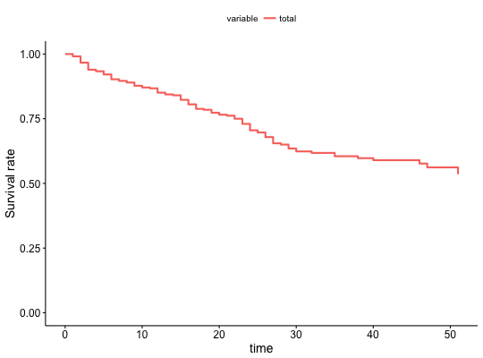
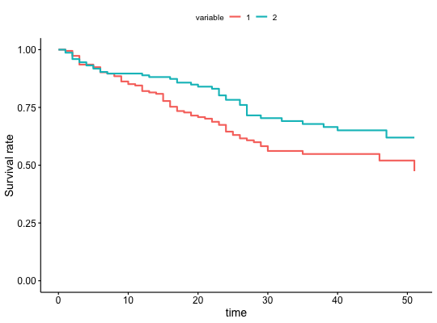
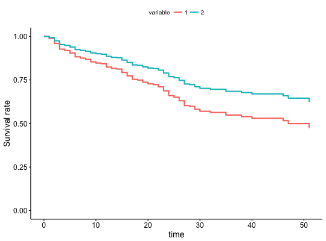
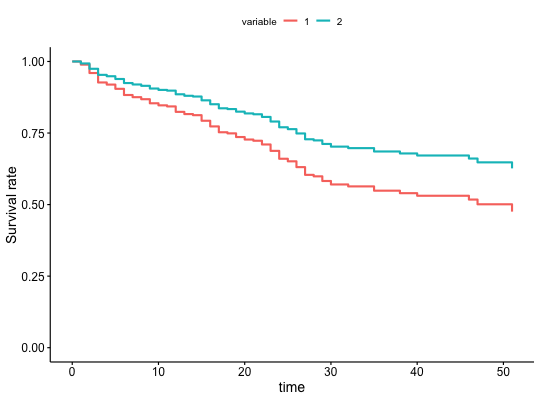
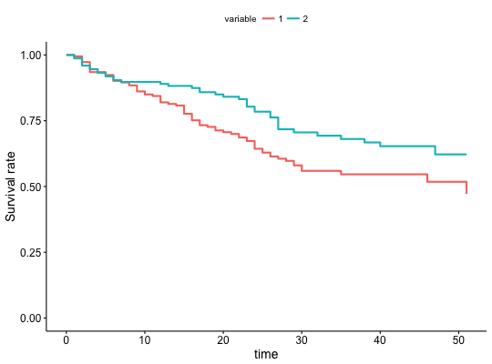

This function plots adjusted survival curves for the coxph model.
The main idea behind this function is to present expected survival curves calculated based on Cox model separately for subpopulations. The very detailed description and interesting discussion of adjusted curves is presented in 'Adjusted Survival Curves' by Terry Therneau, Cynthia Crowson, Elizabeth Atkinson (2015) https://cran.r-project.org/web/packages/survival/vignettes/adjcurve.pdf.
Many approaches are discussed in this article. Currently four approaches (two unbalanced, one conditional and one marginal) are implemented in the ggadjustedcurves() function. See the section Details.
ggadjustedcurves(fit, variable = NULL, data = NULL, reference = NULL, method = "conditional", fun = NULL, palette = "hue", ylab = "Survival rate", ggtheme = theme_survminer(), ...)
strata() component. If there is no strata() component then only a single curve will be plotted - average for the thole population.fit object.data will be used instead. Note that the reference dataset should contain all variables used in fit object.theme.ggpar for customizing the plot.Returns an object of class gg.
Currently four approaches are implemented in the ggadjustedcurves() function.
For method = "single" a single survival curve is calculated and plotted. The curve presents an expected survival calculated for population data calculated based on the Cox model fit.
For method = "average" a separate survival curve is plotted for each level of a variable listed as variable. If this argument is not specified, then it will be extracted from the strata component of fit argument. Each curve presents an expected survival calculated for subpopulation from data based on a Cox model fit. Note that in this method subpopulations are NOT balanced.
For method = "conditional" a survival curve is plotted for each level of a grouping variable selected by variable argument. If this argument is not specified, then it will be extracted from the strata component of fit object. Subpopulations are balanced with respect to variables in the fit formula to keep distributions similar to these in the reference population. If no reference population is specified, then the whole data is used as a reference population instead. The balancing is performed in a following way: (1) for each subpopulation a logistic regression model is created to model the odds of being in the subpopulation against the reference population given the other variables listed in a fit object, (2) reverse probabilities of belonging to a specified subpopulation are used as weights in the Cox model, (3) the Cox model is refitted with weights taken into account, (4) expected survival curves are calculated for each subpopulation based on a refitted weighted model.
For method = "marginal" a separate survival curve is plotted for each level of a grouping variable selected by variable argument. If this argument is not specified, then it will be extracted from the strata component of fit object. Subpopulations are balanced in a following way: (1) the data is replicated as many times as many subpopulations are considered (say k), (2) for each row in original data a set of k copies are created and for every copy a different value of a grouping variable is assigned, this will create a new dataset balanced in terms of grouping variables, (3) expected survival is calculated for each subpopulation based on the new artificial dataset. Here the model fit is not refitted.
library(survival) fit2 <- coxph( Surv(stop, event) ~ size, data = bladder ) # single curve ggadjustedcurves(fit2, data = bladder)fit2 <- coxph( Surv(stop, event) ~ size + strata(rx), data = bladder ) # average in groups ggadjustedcurves(fit2, data = bladder, method = "average", variable = "rx")# conditional balancing in groups ggadjustedcurves(fit2, data = bladder, method = "conditional", variable = "rx")# selected reference population ggadjustedcurves(fit2, data = bladder, method = "conditional", variable = "rx", reference = bladder[bladder$rx == "1",])# marginal balancing in groups ggadjustedcurves(fit2, data = bladder, method = "marginal", variable = "rx")## Not run: ------------------------------------ # # this will take some time # fdata <- flchain[flchain$futime >=7,] # fdata$age2 <- cut(fdata$age, c(0,54, 59,64, 69,74,79, 89, 110), # labels = c(paste(c(50,55,60,65,70,75,80), # c(54,59,64,69,74,79,89), sep='-'), "90+")) # fdata$group <- factor(1+ 1*(fdata$flc.grp >7) + 1*(fdata$flc.grp >9), # levels=1:3, # labels=c("FLC < 3.38", "3.38 - 4.71", "FLC > 4.71")) # # single curve # fit <- coxph( Surv(futime, death) ~ age*sex, data = fdata) # ggadjustedcurves(fit, data = fdata, method = "single") # # # average in groups # fit <- coxph( Surv(futime, death) ~ age*sex + strata(group), data = fdata) # ggadjustedcurves(fit, data = fdata, method = "average") # # # conditional balancing in groups # ggadjustedcurves(fit, data = fdata, method = "conditional", reference = fdata) # # # marginal balancing in groups # ggadjustedcurves(fit, data = fdata, method = "marginal") ## ---------------------------------------------